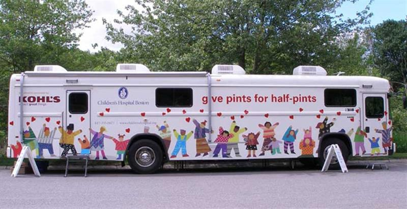

Welcome To ANITS Blood bank !

Blood Resource Sharing
- Getting Blood Where it Needs to Be, Around the Country
- Local community needs come first! The Blood Connection has an obligation to meet the needs of the hospitals in our service area first. But, blood is only good for 42 days it is perishable. To prevent throwing away blood, The Blood Connection will share extra blood with other hospitals and blood centers that do not have what they need to save lives.
- To make sure there is a five-to-seven-day supply and enough of each ABO and Rh type (A+, A-, B+, B-, AB+, AB-, O+, and O-) of blood, The Blood Connection has to collect more than is needed locally. Thus, there is, at times, excess that can be shared with other parts of the country where deficits exist.
- This exchange of blood resources is facilitated by at least two national networks: The National Blood Exchange sponsored by the American Association of Blood Banks and Americas Blood Centers.